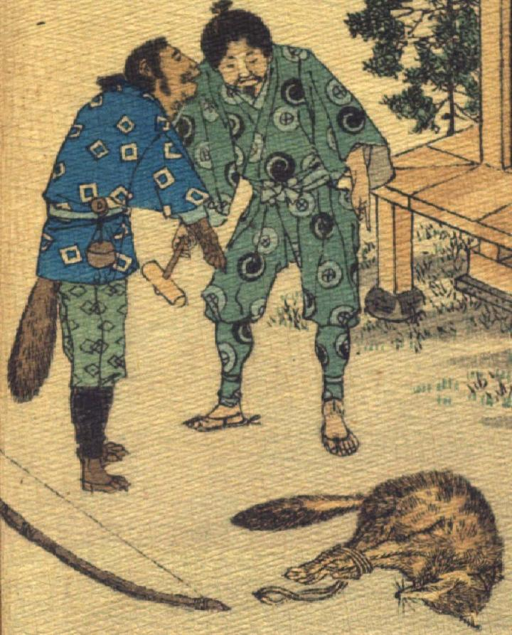

人間に化けた狸。顔は人間の男で、肌が浅黒く、口とあごにひげを生やしている。髪は後ろでまとめている。柄の入った青い着物と青緑色の袴、黒い脚絆を身に着け、草鞋をはいている。傍らに弓が置かれており、猟師の扮装をしているとも考えられる。手と足は茶色い獣のもので、着物の裾から太く毛深い尻尾が覗いている。傍らの、縄で縛られた狐を右手で指差しながら、人間の男に話しかけている。
著作者：J.Dautremer／出典：親書誌：U426_nichibunken_0120：La victoire du petit renard／日付：2006／資源識別子：U426_nichibunken_0120_0009_0001
Copyright (c)2010- International Research Center for Japanese Studies, Kyoto, Japan. All rights reserved.